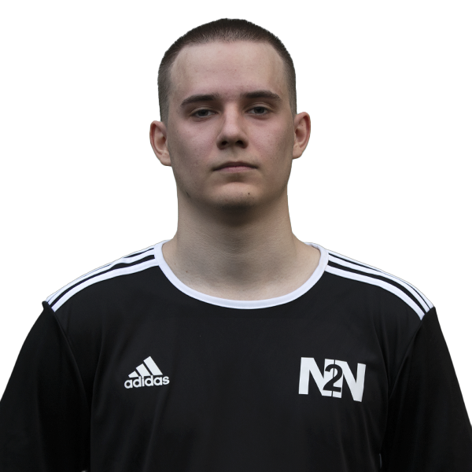
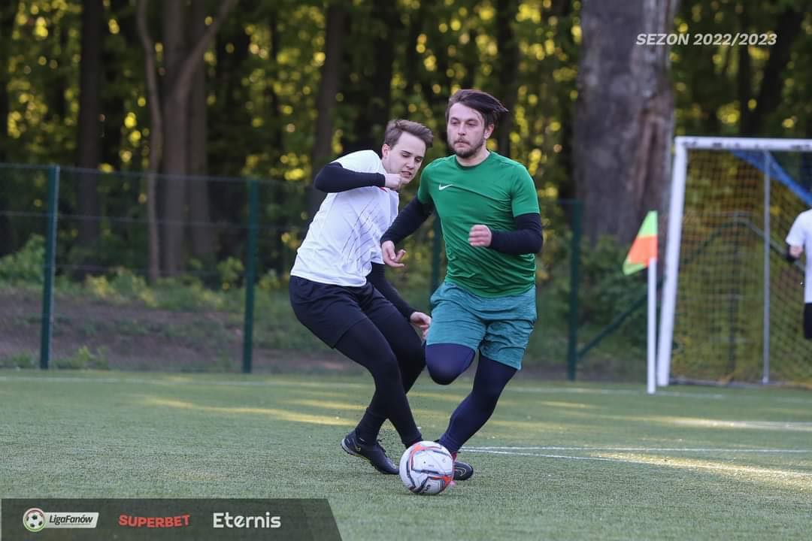
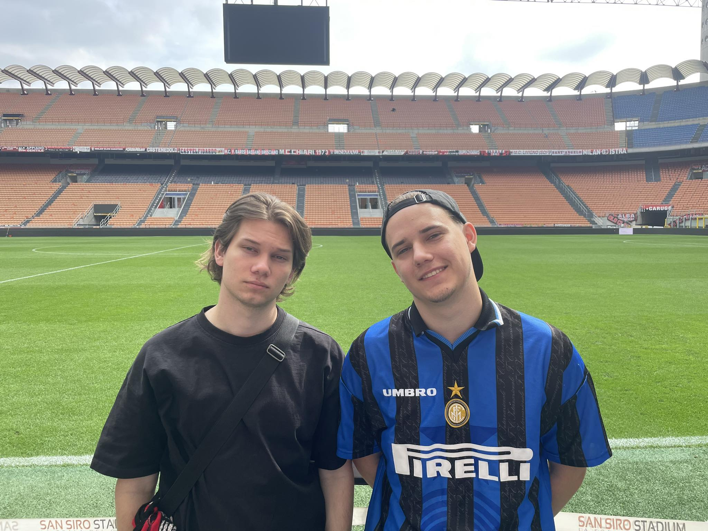
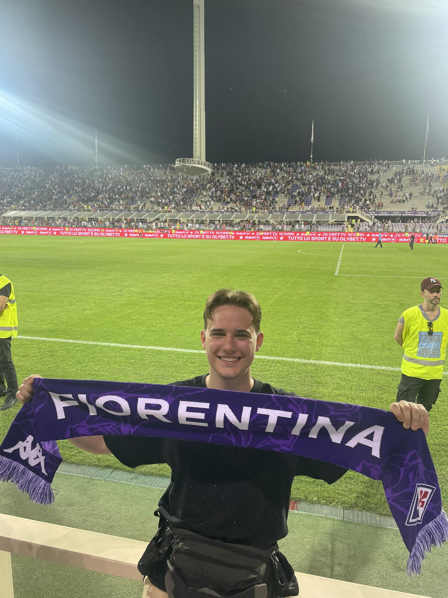
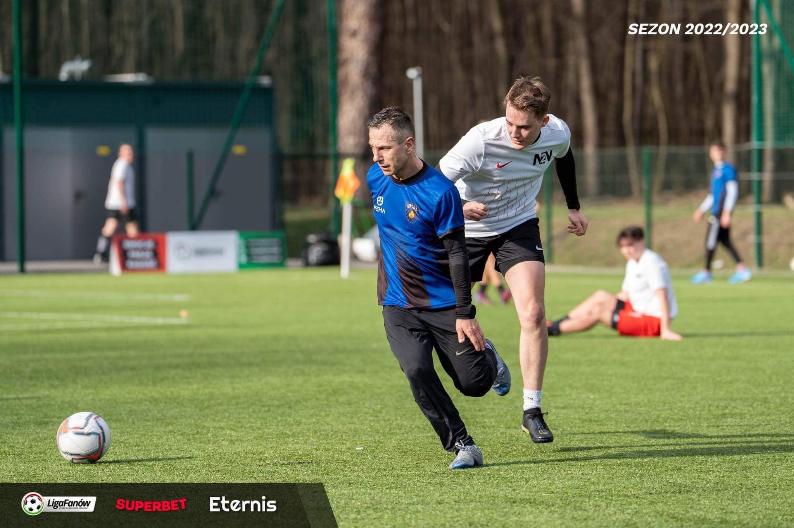

<!DOCTYPE html>
<html lang="pl-PL>
<head>

<meta http-equiv="Content-type" content="text/html; charset=UTF-8" />
<meta http-equiv="Content-Language" content="pl" />
<meta name="Author" content="Aleksander Żuk" />
<title>Piłka nożna okiem amatora</title>
<link rel="stylesheet" href="../css/style.css"/>
</head>


<body style="background-color:lightgray;">

<div id = menu>
<table>
<tr>
<th> <a href ="../index.html"> Menu </th>
<th> <a href ="Na2Nozke.html"> Na2Nóżkę </th>
<th> <a href ="PremierLeague.html"> Premier League </th>
<th> <a href ="MlodePerelki.html"> Mlode Perelki </th>
<th> <a href ="oMnie.html"> O mnie </th>
<th> <a href ="kontakt.html"> Kontakt </th>
</tr>
</table>
</div>

<h1> O mnie </h1>
<hr>

<p style="text-align:justify; padding:2px;">Jestem zapalonym kibicem piłkarskim od 2009 roku. Śledzę ligi od 2. ligi polskiej, przez ligę hiszpańską aż po ligę czeską, a przede wszystkim śledzę "Jej wysokość" <span style="color:gold; font-weight:bold">Premier League</span>. Amatorsko i rekreacyjnie gram i trenuje ten piękny sport. Na codzień jestem zawodnikiem zespołu <u>Na2Nóżkę</u></p> 
<p> Poza tym, studiuje w Olsztynie, na Uniwersytecie Warmińsko-Mazurskim i realizuje się w informatyce. </p>
<p class="clear"> <hr> </p>

<table>
<th colspan="2"><b style="font-size: 50px;"> Moje zdjecia, gdy realizuje swoja pasje</b></th>
<tr>
<td> </td>
<td>  </td>
</tr>

<tr>
<td>  </td>
<td>  </td>
</tr>
</table>

</body>
</html>